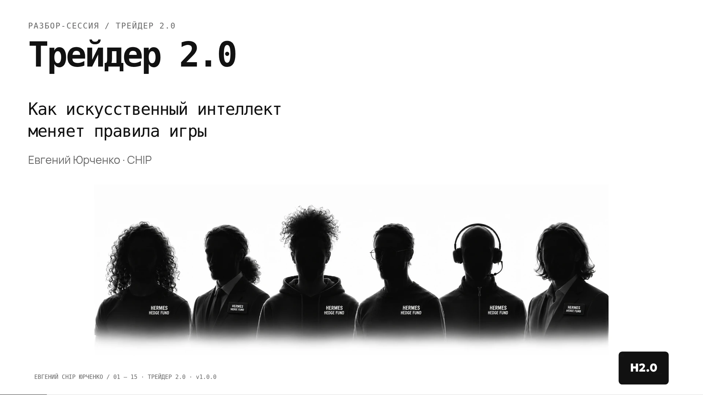

РАЗБОР-СЕССИЯ · ЕВГЕНИЙ ЮРЧЕНКО / CHIP
Трейдер 2.0
Как искусственный интеллект
меняет правила игры

Как поручить помощнику конкретную работу, проверить источники и расчёты, а затем сохранить полезный процесс для повторного запуска. Внутри — исторический пример HYPE, учебный расчёт позиции и первое задание своему помощнику.
15 слайдов · тезисы докладчика по кнопке H2.0 или клавише N.
Переключение: ← →, свайп или кнопки внизу.
Редакция от 24 ноября 2026 · v1.0.0.